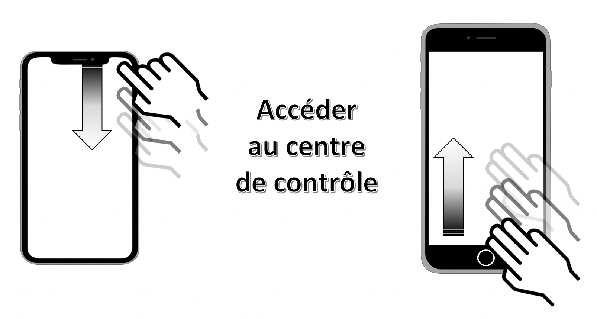
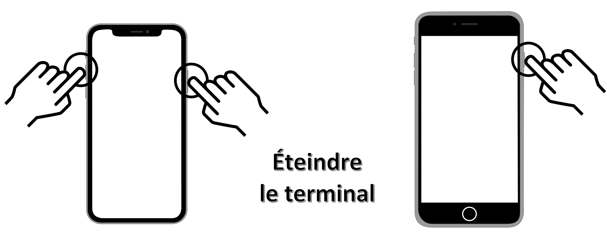

Rappels sur les gestes de base avec un iPhone X
Cette page décrit de façon non exhaustive les gestes spécifiques de l'iPhone X à l'aide d'explications textuelles et de schémas permettant de visualiser plus facilement les manipulations à réaliser.
Par la suite, la gestuelle graphique sur un terminal possédant un bouton principal est mise en parallèle de façon à s'approprier plus facilement cette nouvelle logique de manipulation.
- Revenir à l'écran d'accueil.
- Déverrouiller l'écran.
- Allumer l'écran verrouillé.
- Accéder au centre de contrôle.
- Accéder au multitâche.
- Changer d'application ouverte.
- Activer la fonctionnalité accès facile.
- Poser une question à Siri.
- Accéder à Apple Pay.
- Prendre une capture d'écran.
- Éteindre le terminal.
Mouvement : balayage vers le haut à partir du bas de l'écran avec 1 doigt.

Déverrouiller l'écran
Mouvement : balayage vers le haut à partir du bas de l'écran avec 1 doigt sur l'écran verrouillé. Résultat : déverrouillage automatique de l'écran avec la fonctionnalité faceID activée. La manipulation est exactement la même que précédemment mais elle s'applique ici sur un écran verrouillé.
Mouvement : simple tap sur l'écran avec 1 doigt.
Résultat : l'écran verrouillé s'affiche immédiatement.

Mouvement : balayage vers le bas à partir du coin à droite en haut de l'écran avec 1 doigt. 
Mouvement : glissement avec 1 doigt vers le haut à partir du bas de l'écran et maintenir la pression.
Ce glissement peut aussi être effectué vers la droite de l'écran toujours à partir du bas de l'écran pour obtenir le même résultat.
Résultat : apparition de toutes les applications actuellement ouvertes sur le terminal.

Mouvement : glissement avec 1 doigt vers la gauche ou la droite dans la limite la plus basse de l'écran correspondant à la barre d'accueil de l'application ouverte.

Mouvement : balayage avec 1 doigt vers le bas sur la barre d'accueil.
Le même mouvement vers le haut permet la désactivation.

Mouvement : maintenir la pression sur le bouton latéral droit.
Résultat : lancement de Siri après une à deux secondes.

Mouvement : effectuer une double pression sur le bouton latéral droit.
Résultat : ouverture de l'Apple Pay avec authentification faceID.

Mouvement : effectuer une pression rapide sur le bouton latéral droit et sur le bouton d'augmentation de volume de façon simultanée.
Résultat : capture d'écran enregistrée dans l'application Photos du terminal.

Mouvement : effectuer une pression prolongée sur le bouton latéral droit et sur le bouton d'augmentation de volume de façon simultanée. Résultat : mise à jour de l'écran avec proposition d'éteindre le terminal. 